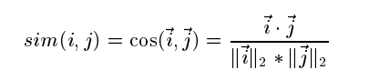
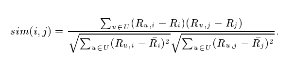
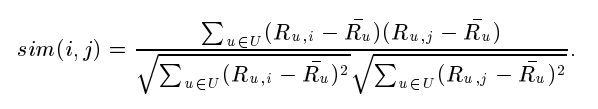
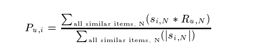

论文总结：Item-Based Collaborative Filtering Recommendation Algorithms

ABSTRACT
Recommender systems apply knowledge discovery techniques to the problem of making personalized recommendations for information, products or services during a live interaction. These systems, especially the k-nearest neighbor collaborative ltering based ones, are achieving widespread success on the Web. The tremendous growth in the amount of available information and the number of visitors to Web sites in recent years poses some key challenges for recommender systems. These are: producing high quality recommendations, performing many recommendations per second for millions of users and items and achieving high coverage in the face of data sparsity. In traditional collaborative ltering systems the amount of work increases with the number of participants in the system. New recommender system technologies are needed that can quickly produce high quality recom- mendations, even for very large-scale problems. To address these issues we have explored item-based collaborative ltering techniques. Item-based techniques rst analyze the user-item matrix to identify relationships between dierent items, and then use these relationships to indirectly compute recommendations for users.
In this paper we analyze dierent item-based recommendation generation algorithms. We look into dierent techniques for computing item-item similarities (e.g., item-item correlation vs. cosine similarities between item vectors) and dierent techniques for obtaining recommendations from them (e.g., weighted sum vs. regression model). Finally, we ex- perimentally evaluate our results and compare them to the basic k-nearest neighbor approach. Our experiments suggest that item-based algorithms provide dramatically better performance than user-based algorithms, while at the same time providing better quality than the best available userbased algorithms.
背景
随着信息量的爆炸式增长，用户在选择商品或服务时面临的信息过载问题变得越来越突出。推荐系统是解决这一问题的关键技术，它通过分析用户行为和数据，提供个性化的推荐。目前，基于协同过滤（Collaborative Filtering, CF）的推荐技术是最成功的应用之一，广泛应用于信息过滤和电子商务场景中。
然而，传统的基于用户的协同过滤方法面临两大挑战：
- 可扩展性：随着用户和项目数量的增加，计算开销显著上升，尤其是在处理大量数据时会导致实时推荐变得不可行。
- 推荐质量：数据稀疏性（即用户对大多数项目没有评分）导致推荐的准确性下降。
为了解决这些问题，本文提出了基于项目的协同过滤算法。与传统方法相比，基于项目的算法通过分析项目间的相似性来生成推荐，而不是直接寻找相似用户。
本文探讨了一种新颖的基于项目的协同过滤（Item-Based Collaborative Filtering, IBCF）推荐算法，用于解决传统用户为中心的协同过滤算法在大规模数据集中的性能和推荐质量问题。主要贡献包括：
- 算法分析：对项目相似性计算（如余弦相似度、调整余弦相似度和相关性）和推荐生成方法（加权和与回归模型）的深入研究。
- 预计算模型：提出一种预计算项目相似度的方法，通过静态项目数据提高算法的在线可扩展性。
- 实验评估：对算法的推荐质量与性能进行了实验比较，结果表明基于项目的算法在推荐精度和效率方面显著优于基于用户的算法。
主要发现
- 调整余弦相似度在生成高质量推荐方面效果最佳。
- 与用户为中心的算法相比，基于项目的算法在数据稀疏性和大规模处理时具有更高的预测精度（较低的平均绝对误差，MAE）。
- 通过模型预计算，只需存储少量的相似项目即可生成高质量的推荐，显著提高了系统的响应速度和吞吐量。
结论
基于项目的协同过滤算法为大规模电子商务中的推荐系统提供了高效且高质量的解决方案，能够在大规模数据集上实现良好的性能表现。这种方法解决了传统用户为中心方法在稀疏性和可扩展性上的瓶颈。
原理
基于项目的协同过滤算法的核心思想是通过计算项目间的相似性来预测用户对某一项目的偏好。以下是其基本工作流程：

-
用户-项目评分矩阵：
- 输入为一个矩阵，其中每一行代表一个用户，每一列代表一个项目，矩阵中的值表示用户对项目的评分。
- 例如，用户 A 对电影 1 的评分为 5 分，而对电影 2 尚未评分（值为 0）。
-
项目相似性计算：
-
余弦相似度：将项目看作向量，计算它们之间夹角的余弦值：
 -
相关性相似度：使用皮尔逊相关系数，通过去除用户评分的平均值来计算相似性：
 -
调整余弦相似度：修正余弦相似度，考虑用户评分偏差：

-
-
评分预测：
-
加权和：对目标项目的评分预测，利用目标用户对相似项目的评分加权求和：
 -
回归模型：利用回归方法对评分进行调整，避免直接使用评分可能产生的误差。

-
-
模型预计算：
- 对所有项目计算相似性矩阵，只存储每个项目的最相似的几个项目，用于实时推荐。
- 通过减少计算范围（即限制 ），显著降低了计算复杂度和存储需求。
实验方法
- 数据集：
- 使用来自 MovieLens 推荐系统的数据集，包含 943 名用户和 1682 部电影，总计约 10 万条评分数据。
- 数据被分为训练集和测试集，不同比例（如 80:20）的分割用于实验分析。
- 评价指标：
- 平均绝对误差（Mean Absolute Error, MAE）：衡量预测评分与实际评分之间的平均差异：
- MAE 越低，表示预测精度越高。
- 实验设置：
- 对比不同相似性算法（如余弦、调整余弦、相关性）对推荐质量的影响。
- 分析训练集比例、邻居数量（ 值）和模型规模对性能和质量的影响。
- 与传统用户为中心的 近邻算法进行比较。
实验结果
- 相似性算法对推荐质量的影响：
- 调整余弦相似度的 MAE 最低，优于普通余弦和相关性相似度。
- 在所有实验中，调整余弦相似度都被选为推荐算法的默认配置。
- 训练集比例和邻居数量的敏感性：
- 随着训练集比例从 20% 增加到 80%，预测质量逐渐提升（MAE 逐渐降低），但收益逐渐减少。
- 基于项目的加权和算法在邻居数量 为 30 时达到最佳性能，进一步增加邻居数量提升有限。
- 与用户为中心的推荐算法比较：
- 基于项目的算法在所有数据稀疏性情况下都优于基于用户的 近邻算法，尤其是在稀疏数据集上表现显著。
- 回归模型在极稀疏数据下表现良好，但在高密度数据中可能过拟合，表现反而下降。
- 模型预计算的性能表现：
- 通过限制模型规模，仅存储最相似的 25-50 个项目，可以实现约 96-98% 的预测精度，显著减少存储和计算时间。
- 在处理效率上，基于模型的算法比直接计算的项目-项目方法快 10 倍以上。
总结
实验表明，基于项目的协同过滤算法不仅在推荐质量上优于传统方法，还在大规模数据集上表现出色。通过预计算技术，算法在计算效率和存储需求之间实现了良好的平衡，是一种适用于电子商务环境的大规模推荐系统解决方案。